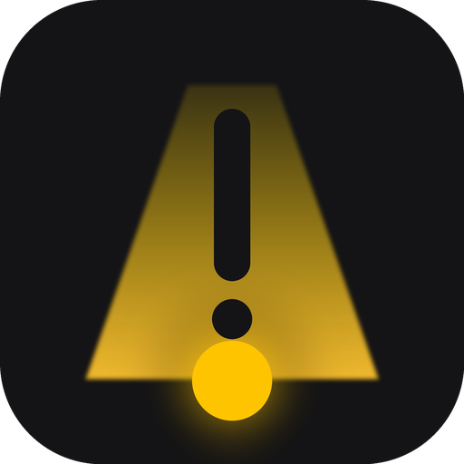
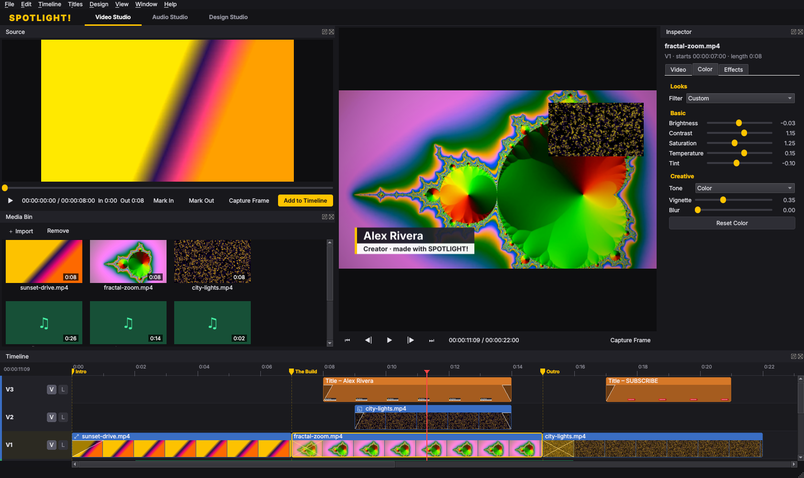
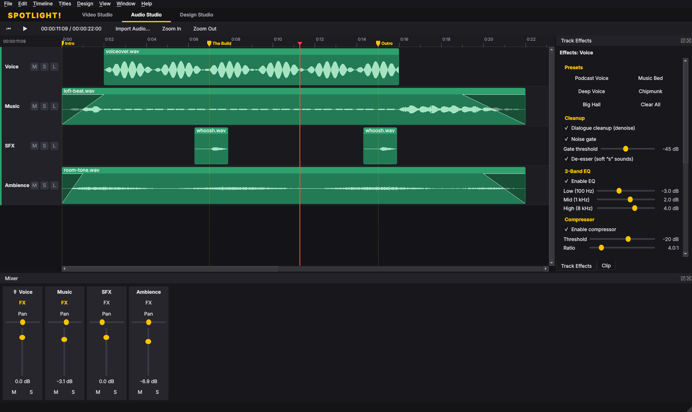
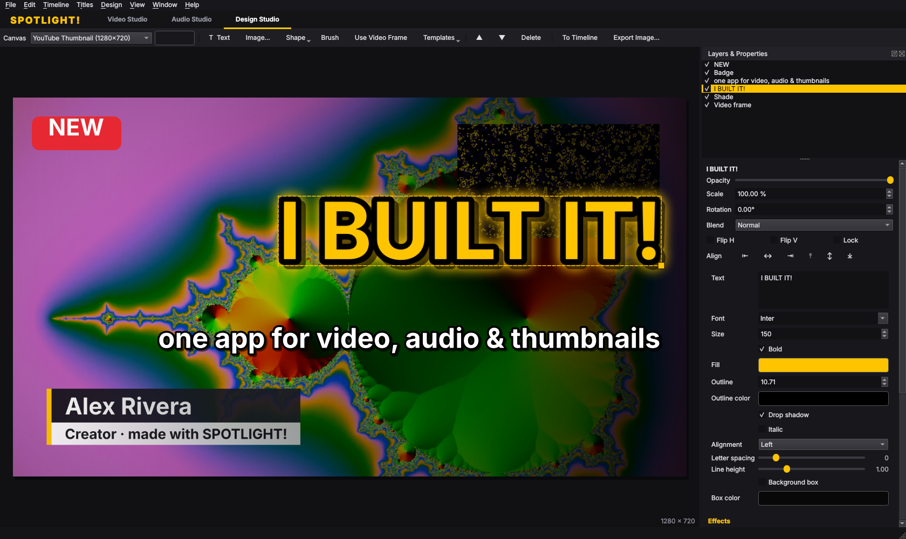

SPOTLIGHT!Edit like Premiere and CapCut. Mix like Logic. Design like Photoshop.
A free desktop studio for creators. Cut your video, clean up and mix the audio, then design the thumbnail from a frame of the same project, without switching apps.
macOS 12+ (Apple Silicon & Intel) · Linux AppImage & .deb · FFmpeg included

Everything shares one timeline, one media bin and one undo history, and it is all autosaved.


The tools you reach for every upload, without the subscription.
Free. Everything you need is bundled, including FFmpeg.
The macOS builds aren't notarized yet. On first launch, open System Settings → Privacy & Security and click Open Anyway.